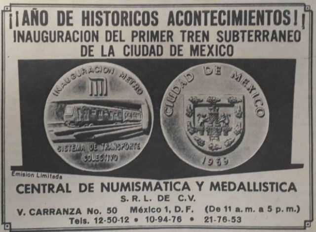
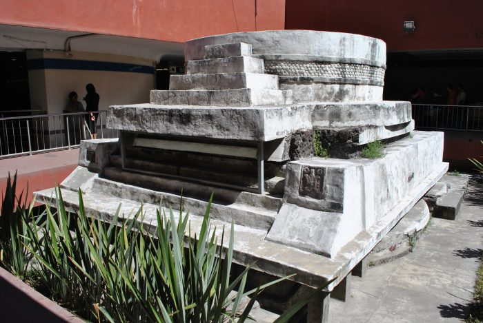
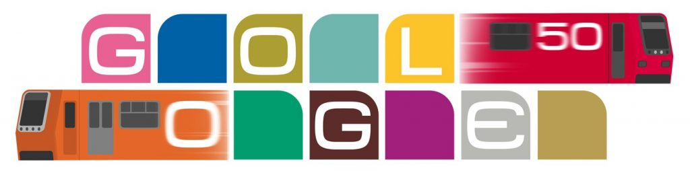

Servicio de transporte público metro |
Inaguracion del metro
|
El 4 de septiembre de 1969, la primera línea del Metro (llamado así por el término “tren metropolitano”), la 1, o popularmente conocida como la rosa, comenzó a correr hacia el este y el oeste desde Zaragoza hasta Chapultepec y contó con 16 estaciones y 12.6 kilómetros de extensión. Fue en la década de 1950 cuando se propuso por primera vez la idea del Metro, la población de la Ciudad de México era más pequeña que ahora, pero el sistema de autobuses y tranvías estaba muy tenso. El 29 de abril de 1967, se publicó, en el Diario Oficial de la Federación, el decreto presidencial que crea el Sistema de Transporte Colectivo, con los Juegos Olímpicos de 1968 a la vuelta de la esquina. En junio de 1967, en el cruce de la avenida Chapultepec con la calle de Bucareli se inauguró los trabajos de la obra civil más grande de la historia de México. Después de dos años de trabajo 4 de septiembre del 1969 realizó su recorrido inaugural. |

|
Curiosidades
|
El Ing. Bernardo Quintana fue quien presentó el proyecto a las autoridades del Distrito Federal en 1958, fue rechazado por su elevado costo. En el sexenio de Gustavo Díaz Ordaz, presentó de nuevo el proyecto y fue aprobado gracias a Alex Berger, quien fungió como mediador entre el presidente mexicano y su homólogo francés, Charles de Gaulle para obtener un crédito. La obra tuvo un costo total de 2,530 millones de pesos, de los cuales, 1,630 millones provinieron del crédito francés y 900 millones por parte del Departamento del Distrito Federal. Cuando el Metro se inauguró fue algo histórico, tanto así que se mandaron a hacer medallas conmemorativas. |
|  |
|
Las línea 1, 2 y 3 se inauguraron con la presencia del presidente Gustavo Díaz Ordaz;
las líneas 4 y 5, con José López Portillo. Para la 6, 7 y 9, por Miguel de la Madrid;
la línea 8 y A, por Carlos Salinas de Gortari; la línea B, por Ernesto Zedillo y la línea 12
por el entonces jefe de Gobierno, Marcelo Ebrard.
|
|  |
|
Hoy en día, las 12 líneas del Metro corresponden a 12 colores diferentes, como se muestra en la obra de arte Doodle de hoy, con conexiones a ferrocarriles ligeros en el sur y teleféricos en el norte, atravesando el área metropolitana más poblada del hemisferio occidental y transportando a poco más de 5 millones de personas diariamente. |
|  |
|
De las 195 estaciones del Metro, 115 de ellas son subterráneas, 54 de superficie y 26 elevadas. El STC cuenta con 15 mil trabajadores que laboran, en turnos, las 24 horas del día. |
Los mitos urbanos sobre el metro de la CDMX
1)Fantasma del metro Pino Suarez
Se rumora que una noche de la década pasada, cuando el Metro terminó de dar servicio, uno de los encargados de revisar que todo estuviera en orden en las vías se encontró a un supuesto “trabajador” que hacía exactamente lo mismo. El encargado se sorprendió, ya que él conocía a todos los trabajadores que estaban en el turno, y este hombre realmente no era uno de ellos. Al preguntar algunos datos el misterioso hombre contestó cosas que solamente un trabajador del metro sabría. Al no creerle ni una palabra al hombre, el encargado reportó este hecho con su superior. El jefe, impactado, le mostró fotos del misterioso trabajador, contándole que había muerto hace algunos años, siendo arrollado por un vagón descompuesto mientras revisaba las vías; además no era el primer trabajador que se lo había encontrado y reportado, ya que el fantasma diario pasaba a esa misma hora.
2)Rata gigante de la linea 3
Se dice que en esta línea del metro, que va de Indios Verdes a Universidad, muchas personas juran haber visto sobre las vías del tren a una rata gigantesca. Hay varias versiones, muchas exageradas pero en ninguna es una rata normal. Unos dicen que es un demonio con forma de rata, otros dicen que es un hombre rata y otros más que es el mismísimo hombre topo.
3) Un trágico accidente borrado de la historia
El 20 de octubre de 1975 ocurrió un choque entre dos trenes del Metro de la CDMX en la estación Viaducto, dejando como resultado a 31 muertos y 70 personas heridas. El archivo completo del conductor culpable del choque entre los dos trenes del metro, debería estar en el Archivo Histórico de la Ciudad de México, sin embargo sólo existe media cuartilla poco relevante y a la fecha no se sabe qué paso con el conductor.
4) La última parada no es Cuatro Caminos
Se rumora desde hace muchos años, casi desde la construcción de la estación del Metro Cuatro Caminos, que ésta no es la última estación de la Línea 2. Se piensa que el metro tiene una estación secreta hecha únicamente para militares, que está cerca del Toreo y que fue diseñada exclusivamente para que el ejército llegue al Zócalo rápidamente si se llega a presentar una emergencia de gran magnitud.
Incendio en el metro de la CDMX
EFE.- El incendio del pasado 9 de enero en el principal centro de control del Metro de la Ciudad de
México, que provocó la suspensión del servicio en seis líneas, se originó por un cortocircuito en un
embobinado de un transformador, informó este viernes la Fiscalía General de Justicia de la Ciudad de
México (FGJCDMX).
En conferencia de prensa, María Seberina Ortega López, coordinadora general de Investigación Forense y
Servicios Periciales de la FGJCDMX descartó que haya sido la falta de mantenimiento la causa principal
del incendio o un sabotaje.
“Se trató de un accidente fortuito y no previsible”, argumentó la funcionaria.
Detalló que el fuego tuvo como foco el interior de la bovina de un transformador, el cual se propagó muy
rápido.
Precisó que, con motivo de dicho incendio, se iniciaron dos carpetas de investigación.
La primera, en la Fiscalía de Investigación Territorial en Cuauhtémoc, con motivo del fallecimiento de
una mujer, integrante de la Policía Bancaria e Industrial, quien sufrió una caída, de manera accidental,
y debido a un traumatismo craneoencefálico se provocó la muerte.
La segunda carpeta, explicó, se inició en la agencia del Sistema de Transporte Colectivo (STC) Metro,
con motivo de los daños causados en el inmueble, derivados del incendio.
Aseguró que expertos videoforenses documentaron las características del lugar, mientras que otros
expertos evaluaron los daños y se encuentran a la espera de los resultados de laboratorio para
determinar el daño del inmueble y determinar si puede seguir ocupado.
Finalmente, señaló que con base en los estudios realizados se sugiere un cambio de los transformadores
de dichas instalaciones.
El pasado 9 de enero un incendio en el principal centro de control del metro en el Centro Histórico de
la capital dejó un muerto y al menos 30 trabajadores intoxicados, además de la suspensión del servicio
en las seis principales líneas.
Tres líneas (4, 5 y 6) fueron reactivadas cuatro días después y las otras tres (1, 2, y 3) se
restablecieron a principios de este mes.
El siniestro provocó que el sistema de transporte suspendiera sus actividades, de manera parcial, tras
más de 51 años de trabajar de manera ininterrumpida.
El metro de la capital mexicana transporta a cerca de 6 millones de personas todos los días labores, lo
que lo hace uno de los más transitados del mundo, aunque su demanda baja durante el fin de semana y más
ahora por la contingencia sanitaria por el Covid-19